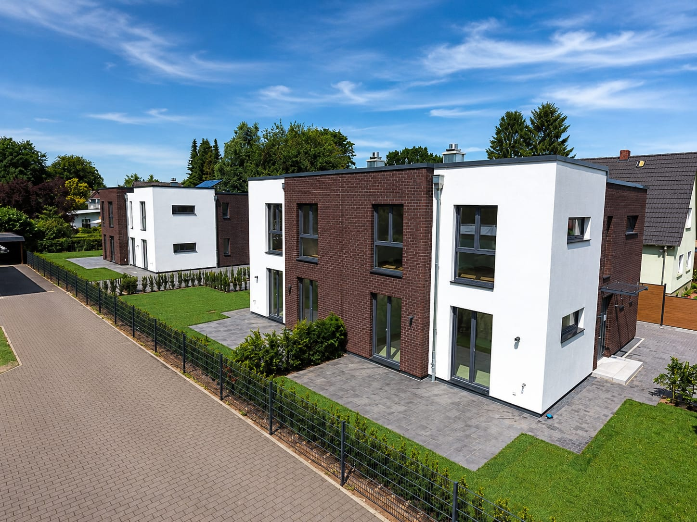

Referenz · Fertiggestellt & verkauft
GB 24
Klare Architektur. Grüne Freiräume.

Das Projekt
Klinker und Putz. Gemeinsam gestaltet.
Im Projekt GB 24 haben wir eine Doppelhaushälfte im vorderen Grundstücksbereich und ein Einfamilienhaus im hinteren Bereich realisiert. Das Projekt ist fertiggestellt und verkauft. Roter Klinker, weiße Putzflächen und dunkle Fensterrahmen geben den Gebäuden eine gemeinsame gestalterische Handschrift. Bodentiefe Fenster öffnen die Räume zu Terrassen und Gärten.
- Doppelhaushälfte vorne
- 1
- Einfamilienhaus hinten
- 1
- Projektstatus
- Verkauft
Einblicke
Architektur im Detail.
3 Aufnahmen · zum Vergrößern antippen
Architektur im Grünen
Raum für das Leben draußen.
Terrassen entlang der Fassaden verbinden die Wohnräume mit den Gärten. Die geradlinigen Baukörper und der Wechsel zwischen Klinker und hellen Putzflächen prägen das Erscheinungsbild des Projekts.